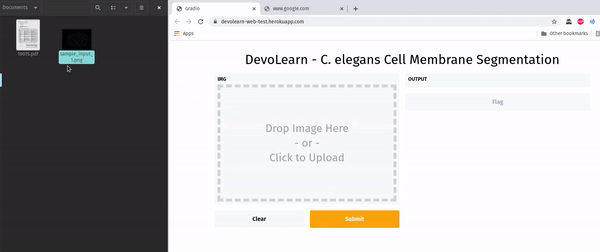
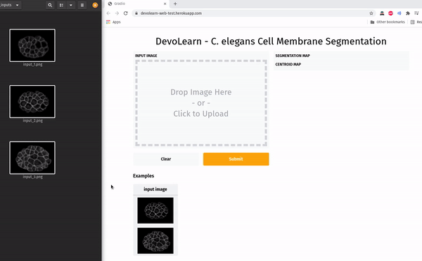

GSoC - Coding Period Week 3
Work Done This Week (June 21st to June 27th)
-
Converted the upgraded segmentation model into ONNX format.
-
Ran inference on the ONNX model (colab and local environment) to make sure it works. Then used Gradio to build a GUI.
-
The next step was to host this online. Gradio has their own hosting service, but that costs $7/month. Looked into ways of hosting apps online for free, decided to go with Heroku.
-
Created the additional files required for hosting online on Heroku:
Procfilerequirements.txtsetup.sh
-
Pushed the files into a github repository, and linked it to the Heroku app.
-
Deployed a bare-bones version of the app online.

-
Adding the centroid mapping feature turned out to be tricky. It worked on local-host, but did not work when deployed on Heroku.
-
Checked the logs, the error message read :
ImportError: libSM.so.6: cannot open shared object file: No such file or directory -
Turns out, it was in issue with OpenCV’s dependency on libSM6. I replaced
opencv-python==4.5.2.54withopencv-python-headless==4.5.2.54and it worked!
-
Not everybody has images of C. elegans embryos saved on their computer, so I decided to add in some examples on the site.
-
Note: The Heroku app is currently linked to a personal repository for quick prototyping and testing.
-
Links:
- Converting torch model to ONNX - Notebook
- Test repository linked to the cell membrane segmentation heroku app - Link
- Cell membrane segmentation web app (test phase)
Planned:
- Make a couple more changes to the GUI hosted on Heroku.
- Upgrade the DevoLearn cell lineage population model.
- Host the cell lineage population model online.
- Resume work on the cell nucleus segmentation model.